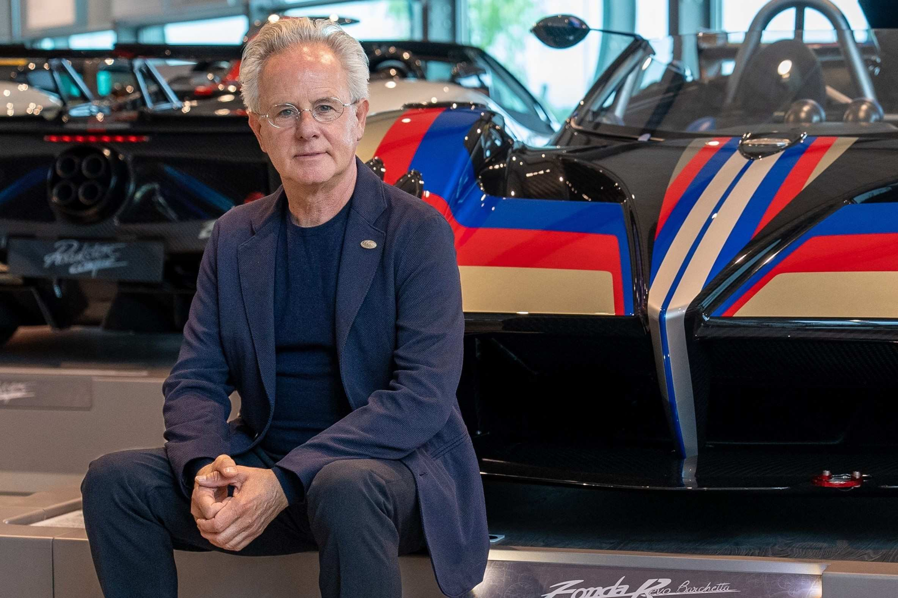
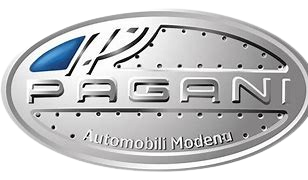
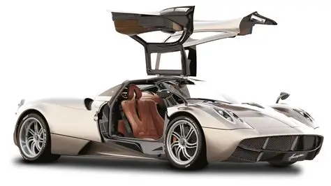
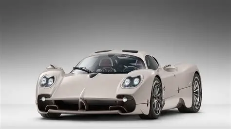

A Pagani é uma fabricante italiana de carros esportivos de luxo fundada por Horacio Pagani em 1992. Reconhecida pelo design exclusivo e materiais de altíssima qualidade, a marca busca combinar arte e engenharia em cada veículo.
História

Exclusividade
A Pagani produz uma quantidade limitada de carros por ano, garantindo que cada modelo seja único e altamente personalizado para o cliente.

Tecnologia
A Pagani utiliza materiais como fibra de carbono e titânio, motores V12 de alta performance e sistemas aerodinâmicos avançados, tornando cada carro uma obra-prima tecnológica.
Modelos Mais Vendidos
Pagani Huayra
Um dos modelos mais icônicos da Pagani, o Huayra combina design arrojado com um motor V12 de alta performance.

Pagani Utopia
O Utopia é o mais recente lançamento da marca, trazendo inovação tecnológica e design exclusivo, continuando a tradição de carros-artísticos da Pagani.
